Some rules have two limits at once - a rollercoaster might need riders between m and m tall, not just under one height. Today you learn to read, draw and list values for these double-bounded inequalities.
By the end you’ll know…
A double inequality such as states two conditions at once.
It is read from the unknown outwards: x is greater than and less than or equal to
On a number line it is a bounded region, with the circle at each end set by its own symbol.
The integers it contains lie between the bounds, and a bound itself counts only when its symbol allows it.
By the end you can
G4Represent and interpret double inequalities on a number line.
G4List integer values satisfying a double inequality, including with negative bounds.
Work down the page at your own pace. Write every answer in your book first, then click to check it.
01
Do Now
About 5 minutes
1
Work out
2
Work out
3
Work out
Remember these?
LAST LESSON
Describe the number line for
Filled circle at with the arrow pointing right.
LAST WEEK
To key in over as a fraction calculation, what must you add and why?
Brackets round — the fraction bar groups the whole denominator.
LAST TERM
How many faces, edges and vertices does a cuboid have?
faces, edges, vertices.
LAST YEAR
Simplify
02
Learn
Read each card, then follow the worked examples one step at a time.
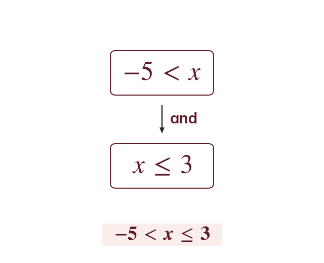
Two conditions at once
A double inequality like states two conditions at once. Read from the unknown outward: AND
a double inequality such as states AND at the same time. Read it from the unknown outward: is greater than and is less than or equal to
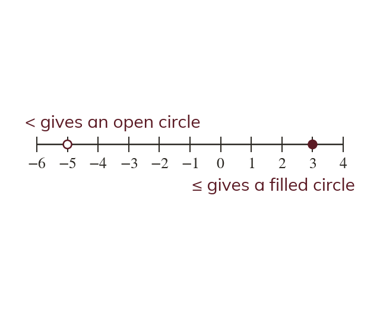
Drawing it
It is a bounded region between the two values. Each end gets its own circle, set by its own symbol. The two ends do not have to match.
on a number line this is a bounded region between the two values. Each end gets its own circle, set by its own symbol - the two ends do not have to match: < or > gives an open circle, ≤ or ≥ gives a filled circle.
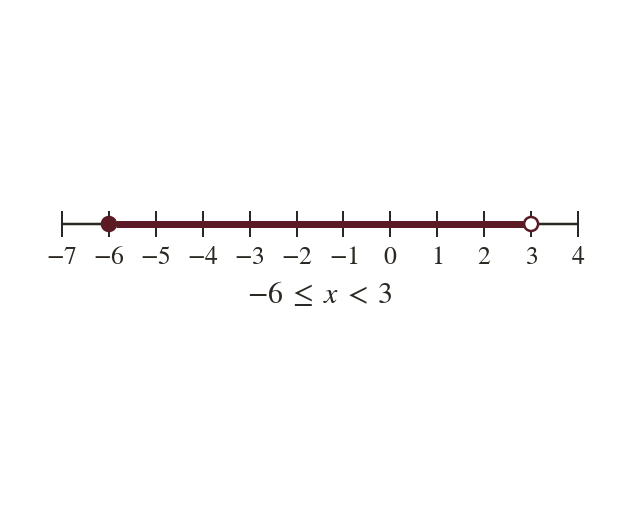
Reading it back
To read it back, note each circle and direction separately. Write the lower bound first, then the upper bound. Both apply to x in the middle.
to read a double inequality off a number line, note each circle and each direction separately, lower bound first then upper bound, both applied to x in the middle.
Inequalities on a number line
WORKED EXAMPLE A
Represent on a number line.
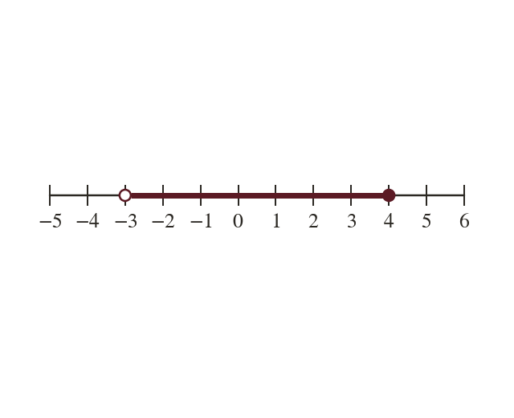
Modellower bound symbol < gives an open circle (excluded).
Upper bound symbol ≤ gives a filled circle (included).
Draw the line between and
WORKED EXAMPLE B
Represent on a number line.
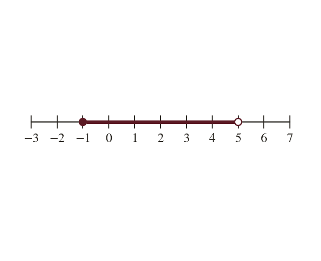
Modellower bound symbol ≤ gives a filled circle (included).
Upper bound symbol < gives an open circle (excluded).
Draw the line between and
YOUR TURN · a
Represent on a number line.
Hint. each circle takes its own symbol.
filled circle at (the ≤ includes it), open circle at (the < does not), and the line joined between them
YOUR TURN · b
Represent on a number line - set each circle from its own symbol.
Hint. Follow the worked example: Model
open circle at (the < does not include it), filled circle at (the ≤ does), and the line joined between them.
03
Check your understanding
Pick an answer. If it's wrong, the feedback tells you which mistake it was.
What does mean?
Not quite. There's a lower limit too:
Yes. Both conditions hold: bigger than and at most
Not quite. There's an upper limit too:
Not quite. It's a range of values between and
Which number line correctly shows ?
Not quite. It's a range, so draw a line from to
Yes. ≤ at gives a filled circle, and < at gives an open one.
Not quite. includes so that end is filled.
Not quite. doesn't include so that end is open.
Which double inequality does this number line show?
Not quite. There's an upper limit too:
Not quite. The circle at is open, so isn't included:
Not quite. There's a lower limit too:
Yes. Open at means and filled at means
04
Practise
mark as you go
Checkpoint.Show your teacher before you go on
1.
A number line has a filled circle at and an open circle at joined. Write the double inequality.
Hint. Follow the worked example: Model
1
Show on a number line.
Hint. Follow the worked example: Model
Open circle at filled circle at
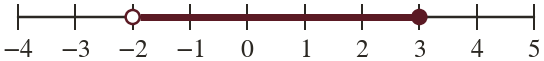
2
Show on a number line.
Hint. Follow the worked example: Model
Filled circle at open circle at
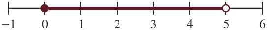
3
Write the double inequality shown.
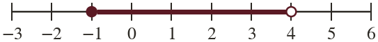
Hint. Follow the worked example: Model
Filled at open at
4
Write "x is more than and at most 1" as a double inequality.
Hint. Follow the worked example: Model
5
Mia shows with a filled circle at What is her mistake?
Hint. Follow the worked example: Model
< is strict: is not included The circle at should be open
EXT
Write and < 8" as a single double inequality.
Hint. Follow the worked example: Model
05
Learn
Read each card, then follow the worked examples one step at a time.
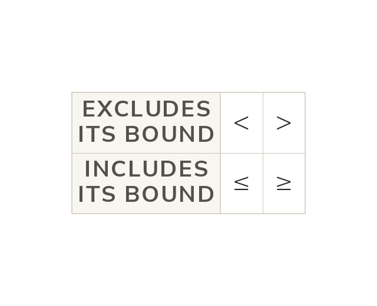
Which integers count
Only whole numbers count. Check each end separately. A bound counts only if its own symbol allows it.
only whole numbers count, and each end is checked separately - a bound counts only if its own symbol allows it (≤, ≥ include the boundary; <, > exclude it).
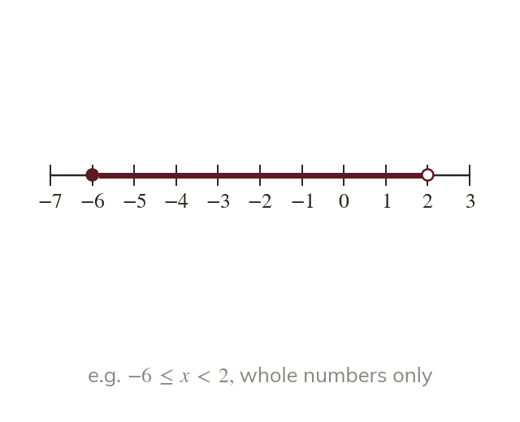
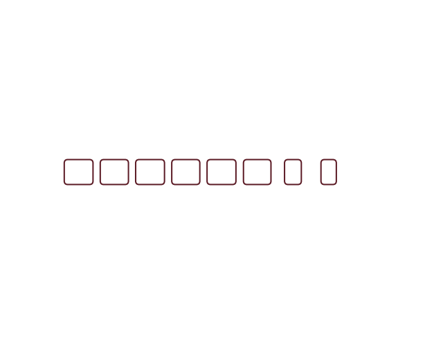
Negative bounds
With a negative lower bound, start counting from that negative integer, not Count up through zero, stopping at the upper bound.
when the lower bound is negative, start counting from that negative integer, not from Count up through the negative integers, then zero, then positive integers, stopping at the upper bound.
WORKED EXAMPLE C
List the integers satisfying Model: lower bound is excluded (open), so start at
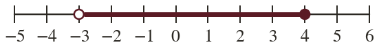
upper bound is included (filled). List
WORKED EXAMPLE D
List the integers satisfying Model: lower bound is included (filled), so start at
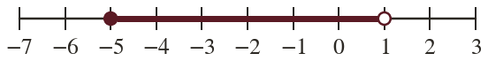
upper bound is excluded (open), so stop at List:
YOUR TURN · c
List the integers satisfying
Hint. Follow the worked example: upper bound is included (filled). List
- the < excludes so the list starts at
YOUR TURN · d
List the integers satisfying
06
Check your understanding
Pick an answer. If it's wrong, the feedback tells you which mistake it was.
List the integers satisfying
Not quite. leaves out.
Yes. is included and isn't:
Not quite. It's a range, so list every integer from up to
Not quite. Start at not : the negatives count too.
List the integers satisfying
Not quite. It's a range, and isn't included. List up to
Not quite. Start just above : the negatives count too.
Yes. is left out and is in:
Not quite. leaves out.
A student is asked to list the integers satisfying but only checks and lists every integer below What key step have they missed?
Not quite. They missed the lower limit,
Yes. There are two conditions: check as well.
Not quite. Start at the lower limit, not at
Not quite. It's a range, so a list is right. Check the lower limit too.
07
Practise
mark as you go
Checkpoint.Show your teacher before you go on
1.
List the integers that satisfy
Hint. Follow the worked example: upper bound is included (filled). List
1
List the integers that satisfy
Hint. Follow the worked example: upper bound is included (filled). List
is not included; is
2
List the integers that satisfy
Hint. Follow the worked example: upper bound is included (filled). List
is included; is not
3
List the integers that satisfy
Hint. Follow the worked example: upper bound is included (filled). List
4
Jo lists the integers that satisfy as What is her mistake?
Hint. Follow the worked example: upper bound is included (filled). List
< is strict, so is not included
5
How many integers satisfy ?
Hint. Follow the worked example: upper bound is included (filled). List
to : negative, positive and integers
EXT
The inequality has exactly integer solutions, and is an integer. Find
Hint. Follow the worked example: upper bound is included (filled). List
The solutions start at :
08
Exit ticket
On paper, on your own, then check
1
What two separate conditions does the double inequality state about ? Read from outward.
x is greater than (strictly, itself excluded), and x is less than or equal to itself included).
2
Draw a number line to show
A filled circle at (included), an open circle at (excluded), with the line drawn between them.
3
List the integer values that satisfy
Finished? Next lesson: 8.2.3 Solving Inequalities.
09
How did it go?
Be honest: it's just for you
For each skill, tap the one that is true for you today. Your Revise pages start with anything you mark Not yet.
Represent and interpret double inequalities on a number line.
List integer values satisfying a double inequality, including with negative bounds.
Your ratings are saved on this device only.
Practise more
After the lesson, or whenever you want more
Dr Frost
Log in, then search for a code to practise that skill.
309cRepresent a two-ended inequality on a number line.
309dInterpret a two-ended inequality represented on a number line.
309fList the integer values represented by an algebraic statement of inequality.